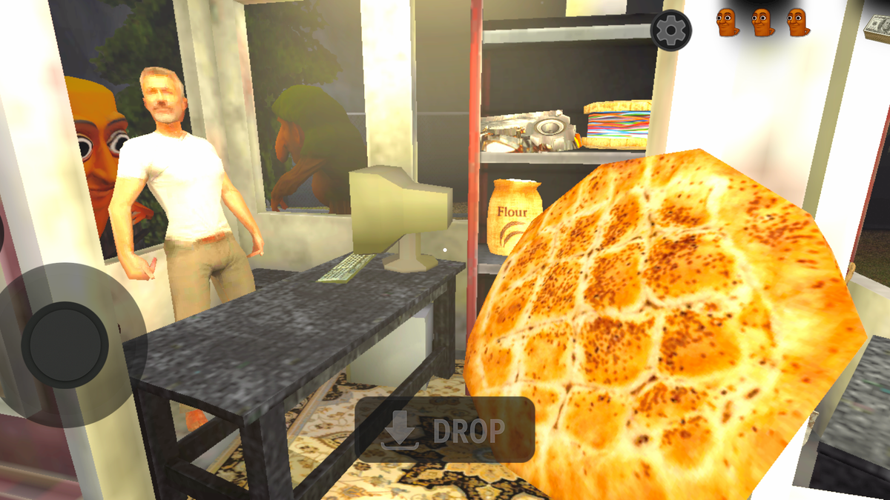
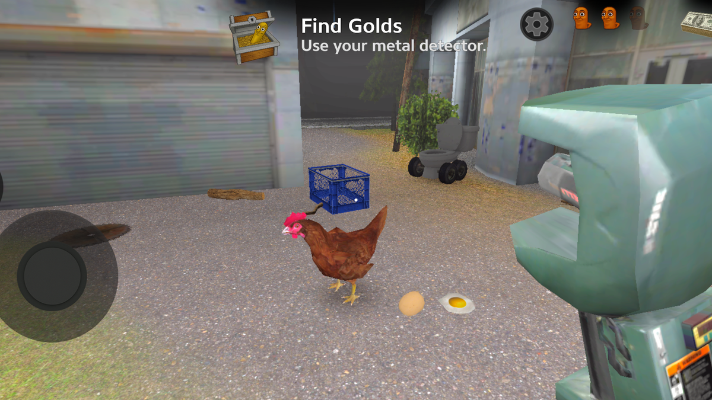

Controls: PC and Mobile
The game uses a standard third-person control scheme. Desktop and mobile layouts map to the same actions.
PC Controls
- MoveWASD or Arrow Keys
- Look AroundMouse
- RunHold Shift
- Interact / Pick UpE
- Pause / Unlock CursorEsc
Mobile Controls
- MoveOn-screen Joystick
- Look AroundDrag Finger
- RunTap and Hold
- InteractTap Hand Icon
- PausePause Button
Core Mechanics: How Each System Works
Four systems run simultaneously. Understanding how they interact is the difference between an 8-minute run and a 15-minute run.

🥖 Bread Baking
Three ingredients spawn near the truck each run. Bake them into Ramadan bread and load it onto the truck for coins. A perfect loaf earns 12 coins. A rushed one earns 5. The timing window is roughly four seconds — miss it and you lose half the profit.
See all items →
🔍 Metal Detector
The detector has 40 pulses per run. Each pulse tells you which direction to dig. Holding the button drains the battery in 15 seconds. Short taps preserve pulses. Save at least 10 for the final three minutes, when the Golden Statue's signal finally spikes.
Metal detector guide →
👁️ Stealth System
The kentongan cannot hear you. He only reacts to movement. Crouching behind a tree breaks line-of-sight and makes you invisible. Sprinting across an open field is what ends most runs. Watch one full patrol cycle before crossing any gap.
Stealth tactics →Survival Tactics That Actually Work
Six habits that separate players who reach the Graveyard from those who restart the Dark Forest.
Watch One Full Patrol Cycle
Every map has a fixed patrol loop. Stay behind cover for a complete cycle before moving. Once you know the timing, you can cross open ground on foot without sprinting once.
Pulse the Detector, Never Hold
Holding the scan button drains the battery in 15 seconds. Tapping it gives you all 40 pulses. The statue's signal only spikes in the final minutes — that's when you need the battery most.
Perfect Bakes Pay for Upgrades
A perfect loaf is 12 coins. A burnt one is 2. Same ingredients. The lucky charm — a fourth life for your next run — pays for itself after three perfect bakes.
Graveyard: Slow Down, Not Speed Up
Fog limits visibility to a few meters and the patrol moves faster. The instinct is to rush. The correct move is to move less and listen more. Audio cues reveal both the patrol and the bone charm.
Church Bell: Prepare Before You Enter
The bell rings once and redirects the patrol toward the village. You have about 30 seconds. Know your exit route before you trigger it — not after.
Save 10 Pulses for the Final Dig
The Golden Statue does not show up on the detector until the last few minutes. If you spent all 40 pulses early, you'll be digging blind while the patrol closes in.
Three Mistakes That End Most Runs
These are the three behaviors that account for the highest number of early failures.
Sprinting in the Open
The kentongan reacts to movement, not sound. A crouched player behind a tree is invisible. A sprinting player in a clearing is a target. If you can see the sky, you can probably be seen.
Emptying the Detector Early
Using all 40 pulses in the first five minutes leaves you with no way to locate the statue in the final stretch. The signal only spikes late. Pace your scans.
Rushing the Oven
A rushed loaf is 5 coins instead of 12. Over a full run that's a difference of 20 to 30 coins — enough to miss the lucky charm that would have saved your next attempt.
Run Breakdown: What Happens in a Typical 12-Minute Session
A well-paced run follows a predictable rhythm. Knowing the phases helps you plan your movement and your scans.
| Phase | Time | Primary Goal | Detector Budget |
|---|---|---|---|
| Opening | 0–4 min | Bake first batch of bread. Learn patrol direction. | 0–5 pulses |
| Mid-Run | 4–9 min | Scan for nearby relics. Sell bread. Buy tools if needed. | 15–20 pulses |
| Final Stretch | 9–15 min | Locate Golden Statue. Dig. Return to truck. | 10–15 pulses saved |
Quick Answers
❓ View Full FAQ → ← Back to HomeDisclaimer: This is an unofficial fan site. Tung Tung Tung Sahur and all related characters, names, and game content are the property of their respective creators and studios. This site is not affiliated with, endorsed by, or sponsored by any of them. All trademarks and copyrights belong to their owners.